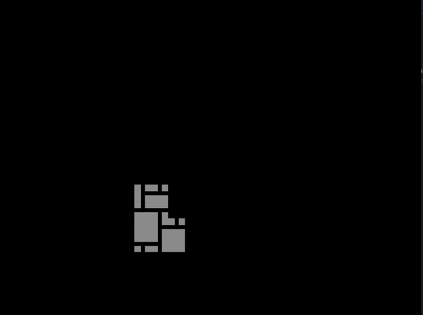

Unraveling the Mysteries of Wave Function Collapse with Pygame
Exploring various algorithms and techniques in programming and game development can be both educational and immensely captivating. One intriguing concept that cought my interest is Wave Function Collapse (WFC), an algorithm used in procedural generation and game development to generate worlds and environments.
In this blog post, I'll talk about what WFC is and implement the WFC algorithm using Pygame, a popular Python library for creating games and multimedia applications. By the end of this post, you'll have a basic understanding of how WFC works and how I've implemented in Pygame.
Understanding the Basics
At its core, the Wave Function Collapse algorithm operates on the principle of "wave-like" propagation of information. It starts with a grid of cells, each representing a possible state or configuration. These cells interact with their neighbors according to predefined rules, gradually collapsing into a final, coherent pattern. Take sodoku as an example, where each cell's value is constrained by its neighboring cells. Each cell starts with a superposition of possible values and collapses into a single value based on these constraints. Each cell has entropy, which is the number of possible states it can be in. The algorithm tries to minimize the entropy of each cell by collapsing it to a single state based on the constraints imposed by its neighbors. It finds the cell with the lowest entropy and collapses it to a single state, propagating this change to its neighbors and updating their entropies. This process continues until all cells reach a stable state. You can read more about the algorithm here.
In our implementation, we represent each cell as a square tile with various directional possibilities: up, down, left, and right. The algorithm iteratively collapses the superposition of possible states into definite configurations based on neighboring constraints until all cells reach a stable state.
Here are the rules for my tile set. The tiles in each direction section refer to what tile is able to place there. For example, if the tile is facing up and the tile we are trying to place is above it, we can only place a tile that is facing down, left, or right.
# rules for the tiles
rules = {
"up": {
BLANK: [BLANK, UP],
DOWN: [UP, BLANK],
LEFT: [DOWN, LEFT, RIGHT],
RIGHT: [DOWN, LEFT, RIGHT],
UP: [DOWN, LEFT, RIGHT]
},
"down": {
BLANK: [BLANK, DOWN],
UP: [DOWN, BLANK],
LEFT: [UP, LEFT, RIGHT],
RIGHT: [UP, LEFT, RIGHT],
DOWN: [UP, LEFT, RIGHT]
},
"left": {
BLANK: [BLANK, LEFT],
RIGHT: [LEFT, BLANK],
UP: [UP, DOWN, RIGHT],
DOWN: [UP, DOWN, RIGHT],
LEFT: [UP, DOWN, RIGHT]
},
"right": {
BLANK: [BLANK, RIGHT],
LEFT: [RIGHT, BLANK],
UP: [UP, DOWN, LEFT],
DOWN: [UP, DOWN, LEFT],
RIGHT: [UP, DOWN, LEFT]
}
}Implementing WFC with Pygame
Let's delve into the code to see how Wave Function Collapse is implemented using Pygame. The code consists of several components:
- Initialization: Setting up the Pygame environment, loading tile images, and initializing cell structures.
- Collapse Function: Randomly collapsing a cell based on available directions and updating its state.
- Update Directions: Updating possible directions for each cell based on neighboring constraints.
- Main Loop: Iterating through the process of collapsing cells and updating the display until all cells are in a stable state.
Once all that is completed, the final result should look something like this

Experimentation and Exploration
Now comes the fun part! Once you understand the basics of the algorithm and how it's implemented, you can start experimenting and exploring its capabilities. Here are a few ideas to get you started:
- Custom Tilesets: Replace the default tileset with your own custom tiles to create unique patterns and visuals.
- Rule Modifications: Tweak the rules governing cell interactions to observe different emergent behaviors and patterns.
- Interactive Elements: Add interactivity to the simulation by allowing users to modify cells or observe the algorithm in real-time.
Conclusion
Wave Function Collapse is a powerful algorithm with diverse applications in procedural generation, game design, and beyond. I enjoyed exploring the inner workings of WFC and implementing it using Pygame, and I hope this post has inspired you to do the same.
This project was inspired by The Coding Train's video on WFC, which you can watch here.
Thank you for reading, and happy coding! The entire code for this project can be found here.
Posted by: Aidan Vidal
Posted on: May 15, 2024